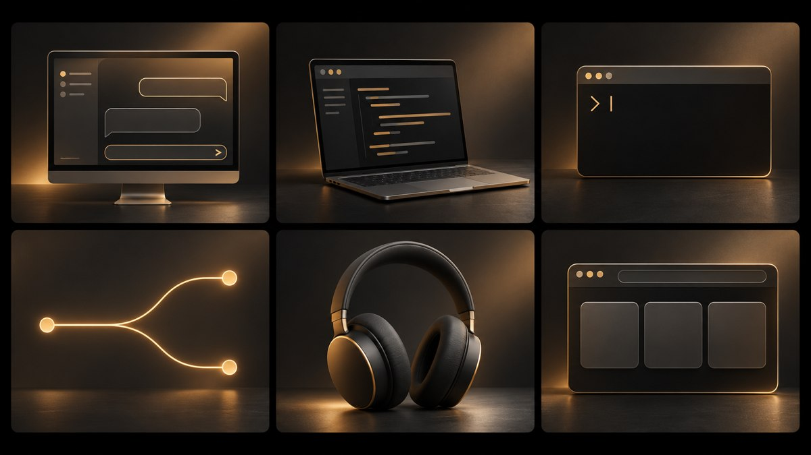

Una sola ruta
El servicio alcanza su límite y tienes que esperar o repetir manualmente la solicitud en otra herramienta.
Configura dos opciones en FreeLLMAPI y, si la primera alcanza su límite, la segunda puede intentar la misma solicitud. Simula el cambio sin una cuenta: cuando una ruta responde, puedes cambiar el color y girar los auriculares.
IA con Ruta de Respaldo es una guía con una demostración para quienes quieren probar herramientas de IA con límites de uso. Muestra cómo FreeLLMAPI intenta usar otro proveedor, el servicio que recibe tu solicitud y proporciona el modelo, y dónde entran Claude Desktop, Claude Code, Arena y v0. Puedes empezar por la demostración, que se ejecuta en el navegador y usa respuestas ficticias.

Decide de antemano qué merece un segundo intento y cómo comprobar el resultado.
El servicio alcanza su límite y tienes que esperar o repetir manualmente la solicitud en otra herramienta.
El enrutador prueba otra opción que configuraste. Comprueba quién respondió y prueba el resultado antes de usarlo.
Conoce la demostración original y consulta los manuales actuales para ver qué ofrece cada herramienta.
Empieza con una tarea pequeña y un resultado que puedas comprobar.
Describe el resultado esperado. En un configurador de auriculares, cambiar el color debe cambiar el producto en pantalla.
Un límite temporal puede activar la segunda opción. Comprueba el orden de los intentos y el modelo utilizado.
En una herramienta de documentos, descarga el archivo y ábrelo en otra aplicación para comprobar el formato y el contenido.
La aplicación recibe tu solicitud. El modelo responde. El enrutador decide a dónde dirigirla.
Cuando esta función está disponible, la aplicación puede enviar tus solicitudes a otro servicio de IA. Puedes elegir FreeLLMAPI para enrutar y cambiar las rutas.
La pestaña Code trabaja con los archivos de la carpeta que eliges. Se usó en el video para crear el configurador de auriculares en 3D.
Abres el asistente en la carpeta del proyecto. Es la opción para quienes quieren revisar los archivos y seguir la ejecución mediante comandos.
Entorno de pruebas del propio enrutador. El video usa esta pantalla para solicitar un prototipo de herramienta de documentos.
Servicio independiente que elige la ruta por su cuenta. Para elegir directamente un modelo, comprueba si tu cuenta tiene crédito promocional vigente o saldo de pago.
Genera y muestra prototipos de interfaces en el navegador. Consulta el plan actual y las opciones que aparecen en tu cuenta.
En la referencia, FreeLLMAPI reúne Google AI Studio, Kilo Gateway, OpenRouter, NVIDIA, Z.ai y Cloudflare Workers AI. Cada proveedor tiene sus propias reglas de acceso y puede recibir el contenido que envíes.
Después de la simulación, usa el asistente que ya conoces en el navegador y pega la solicitud de abajo.
Abre el asistente de IA que ya usas en el navegador.
La solicitud ya viene preparada con una prueba pequeña y datos ficticios.
Lee el plan, comprueba dónde se generará la respuesta y solo entonces decide si quieres continuar.
Quiero probar una ruta de respaldo para un configurador ficticio de auriculares. El resultado debe cambiar el color y girar la vista. Usa como contexto https://inematds.github.io/ia-com-rota-reserva/guia/es/ . Sugiere una herramienta y una prueba que pueda verificar. Indica dónde se procesarían los datos y cuánto podría costar. Espera mi aprobación antes de usar servicios externos o cambiar configuraciones.
En la referencia, Playground logró responder en modo automático después de registrar un límite. Aquí controlas lo que ocurre con cada ruta. Pulsa Probar ruta para ver los intentos. Las respuestas se simulan en el navegador.
Cuando la aplicación está conectada a FreeLLMAPI, la respuesta depende del modelo que seleccione el enrutador. Consulta el proveedor que respondió en el registro de la solicitud.
La prueba de esta página se ejecuta en tu navegador. Para usar servicios externos, consulta los límites, los precios y las condiciones del plan elegido.
Para aprender, usa ejemplos ficticios. Antes de enviar datos reales, comprueba adónde irán y cuáles son las condiciones de cada servicio.
Lee el error, comprueba los permisos y espera a que el servicio vuelva a estar disponible. Prueba el caso en la demostración para ver la diferencia.
¿Qué tarea probarías primero con una ruta alternativa?